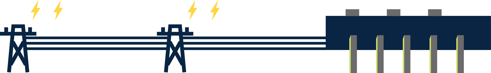
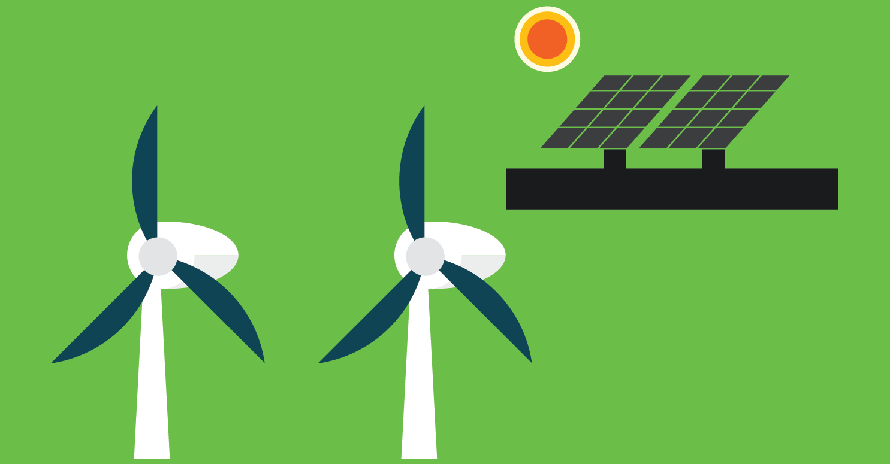

智慧城市大解構
發電廠

供電系統的運作方法
- 香港電燈有限公司負責供應港島、鴨脷洲和南丫島的電力，中華電力有限公司則供電予九龍、新界以及大嶼山和多個離島。電力供應為50赫茲，220伏特單相或380伏特三相的交流電
- 由發電廠生產電力，經過輸配電系統傳送給各電力用戶。發電廠生產的電力的電壓很高，可高達400,000伏特。這些電力會再經過處理，待電壓降低後才會輸送至住宅供市民使用，這時的電壓為220伏特
- 變電站內的變壓器將高壓電降低至適合一般電器使用的電壓，即380伏特或220伏特，電力經由本地的低壓電纜傳送到用戶所在的樓宇，這個過程就是「配電」
- 一般樓宇內的電力裝置包括總掣、配電箱、供電予公用設施的線路和供電予個別用戶的線路等。用戶的電力裝置通常都裝有電錶以記錄用電量
參考資料:
補充資料
城市人會使用哪些種類的能源
城市人常用的能源包括太陽能、石油、天然氣、煤和核能。有些能源會有被耗盡的一天，因而被稱為不可再生能源，如煤和天然氣。但可再生能源卻不會被耗盡。例如風力發電、地熱能和潮汐能都屬於可再生能源，它們對自然環境的影響小，而且取之不盡，對人類未來的可持續發展有正面作用

強制性能源效益標籤計劃
- 政府現透過《能源效益（產品標籤）條例》推行強制性能源效益標籤計劃，強制指定產品須貼上能源標籤，讓消費者知道產品的能源效益
- 目前計劃涵蓋的產品類別包括：空調機、冷凍器具、慳電膽、洗衣機、抽濕機、電視機、儲水式電熱水器及電磁爐。這項計劃有助市民挑選擁有能源效益的產品，有助保護環境
在智慧城市中，能源的存取、使用都與舊日有很大分別，例如現時更講求節能及開發不同種類的新能源，以及電力供應如何滿足物聯網的需要
智慧城市亦有「智能電網」，利用資訊及通訊科技，收集電力使用的狀況，再用這些資訊調整電力生產及分配，達到節約能源、降低損耗等效果
供水系統
- 食水供應包括三個主要程序：收集原水、處理和分配。原水從水塘和東江經大型輸水管及隧道送到濾水廠，過濾後再經輸水幹管或隧道抽送到配水庫，繼而利用水向低流原理，流進分配網絡，輸往不同建築物包括住宅、商廈、酒店和餐廳、工廠和倉庫等，最後抵達用戶的水龍頭
- 海水與飲用水的供應系統是完全分開的。海水供應系統採用「調節池」式配置，海水從抽水站的輸水管直接抽送到用戶單位，作沖廁用途，而剩餘的水則送往海水配水庫儲存
參考資料:
https://www.wsd.gov.hk/tc/core-businesses/operation-and-maintenance-of-waterworks/index.html
相關工程
專業界別